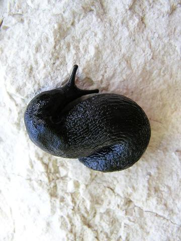

Вот лимаксы, т.е. все их виды:
В составе рода:
вид: Limax aeolianus Giusti, 1973

вид: Limax albipes Dumont & Mortillet, 1853
вид: Limax alpinus Férussac, 1822
вид: Limax bielzii Seibert, 1873
вид: Limax canapicianus Pollonera, 1885
вид: Limax cephalonicus Simroth, 1886
вид: Limax ciminensis Pollonera, 1890
вид: Limax cinereoniger Wolf, 1803
.jpg)
вид: Limax conemenosi Böttger, 1882
вид: Limax corsicus Moquin-Tandon, 1855
вид: Limax dacampi Menegazzi, 1854

вид: Limax dobrogicus Grossu & Lupu, 1960
вид: Limax erythrus Bourguignat, 1864
вид: Limax gerhardti Niethammer, 1937
вид: Limax graecus Simroth, 1889
вид: Limax granosus Bérenguier, 1900
вид: Limax hemmeni Rähle, 1983
вид: Limax ianninii Giusti, 1973
вид: Limax lachensis Bérenguier, 1900
вид: Limax maximus Linnaeus, 1758
 |
 |
 |
вид: Limax millipunctatus Pini, 1885
вид: Limax pironae Pini, 1876
вид: Limax polipunctatus Pollonera, 1888
вид: Limax punctulatus Sordelli, 1871
вид: Limax redii Gerhardt, 1933
вид: Limax squamosus Bérenguier, 1900
вид: Limax subalpinus Lessona, 1880
вид: Limax veronensis Lessona & Pollonera, 1882
вид: Limax wohlberedti Simroth, 1900
вид: Limax zilchi Grossu & Lupu, 1960
но
вид: Limax cinereoniger Wolf, 1803
вид: Limax maximus Linnaeus, 1758

эти два у нас в основном
Arion в основном два вида, тоже
либо Arion rufus, он же (предположительно) subfuscus (Arion rufus (Linnaeus, 1758))
.jpg)
или вот это вид: Arion lusitanicus Mabille, 1868